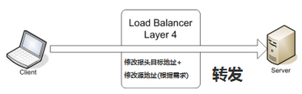

负载均衡分类
负载均衡根据所采用的设备对象（软/硬件负载均衡），应用的OSI网络层次（网络层次上的负载均衡），及应用的地理结构（本地/全局负载均衡）等来分类
网络层次上的负载均衡
根据负载均衡所作用在 OSI 模型的位置不同，负载均衡可以大概分为以下几类：
- 二层负载均衡（mac）
根据OSI模型分的二层负载，一般是用虚拟mac地址方式，外部对虚拟MAC地址请求，负载均衡接收后分配后端实际的MAC地址响应。
- 三层负载均衡（ip）
一般采用虚拟IP地址方式，外部对虚拟的ip地址请求，负载均衡接收后分配后端实际的IP地址响应。
- 四层负载均衡（tcp）
在三层负载均衡的基础上，用ip+port接收请求，再转发到对应的机器。
- 七层负载均衡（http）
根据虚拟的url或IP，主机名接收请求，再转向相应的处理服务器。
在实际应用中，比较常见的就是四层负载及七层负载。这里也重点说下这两种负载。
负载均衡器通常称为四层交换机或七层交换机。四层交换机主要分析IP层及TCP/UDP层，实现四层流量负载均衡。七层交换机除了支持四层负载均衡以外，还有分析应用层的信息，如HTTP协议URI或Cookie信息。
针对网络上负载过重的不同瓶颈所在，从网络的不同层次入手，我们可以采用相应的负载均衡技术来解决现有问题。
随着带宽增加，数据流量不断增大，网络核心部分的数据接口将面临瓶颈问题，原有的单一线路将很难满足需求，而且线路的升级又过于昂贵甚至难以实现，这时就可以考虑采用链路聚合（Trunking）技术。
链路聚合技术（第二层负载均衡）将多条物理链路当作一条单一的聚合逻辑链路使用，网络数据流量由聚合逻辑链路中所有物理链路共同承担，由此在逻辑上增大了链路的容量，使其能满足带宽增加的需求。
现代负载均衡技术通常操作于网络的第四层或第七层。第四层负载均衡将一个Internet上合法注册的IP地址映射为多个内部服务器的IP地址，对每次 TCP连接请求动态使用其中一个内部IP地址，达到负载均衡的目的。在第四层交换机中，此种均衡技术得到广泛的应用，一个目标地址是服务器群VIP（虚拟 IP，Virtual IP address）连接请求的数据包流经交换机，交换机根据源端和目的IP地址、TCP或UDP端口号和一定的负载均衡策略，在服务器IP和VIP间进行映射，选取服务器群中最好的服务器来处理连接请求。
第七层负载均衡控制应用层服务的内容，提供了一种对访问流量的高层控制方式，适合对HTTP服务器群的应用。第七层负载均衡技术通过检查流经的HTTP报头，根据报头内的信息来执行负载均衡任务。
四层负载均衡（基于IP+端口的负载均衡）
所谓四层负载均衡，也就是主要通过报文中的目标地址和端口，再加上负载均衡设备设置的服务器选择方式，决定最终选择的内部服务器。
- 
Layer4
- 在三层负载均衡的基础上，通过发布三层的IP地址（VIP），然后加四层的端口号，来决定哪些流量需要做负载均衡，对需要处理的流量进行NAT处理，转发至后台服务器，并记录下这个TCP或者UDP的流量是由哪台服务器处理的，后续这个连接的所有流量都同样转发到同一台服务器处理。
- 以常见的TCP为例，负载均衡设备在接收到第一个来自客户端的SYN 请求时，即通过上述方式选择一个最佳的服务器，并对报文中目标IP地址进行修改(改为后端服务器IP），直接转发给该服务器。TCP的连接建立，即三次握手是客户端和服务器直接建立的，负载均衡设备只是起到一个类似路由器的转发动作。在某些部署情况下，为保证服务器回包可以正确返回给负载均衡设备，在转发报文的同时可能还会对报文原来的源地址进行修改。
- 对应的负载均衡器称为四层交换机（L4 switch），主要分析IP层及TCP/UDP层，实现四层负载均衡。此种负载均衡器不理解应用协议（如HTTP/FTP/MySQL等等）
要处理的流量进行NAT处理，转发至后台服务器，并记录下这个TCP或者UDP的流量是由哪台服务器处理的，后续这个连接的所有流量都同样转发到同一台服务器处理。
实现四层负载均衡的软件有：
- F5：硬件负载均衡器，功能很好，但是成本很高。
- lvs：重量级的四层负载软件
- nginx：轻量级的四层负载软件，带缓存功能，正则表达式较灵活
- haproxy：模拟四层转发，较灵活
七层的负载均衡（基于虚拟的URL或主机IP的负载均衡)
所谓七层负载均衡，也称为“内容交换”，也就是主要通过报文中的真正有意义的应用层内容，再加上负载均衡设备设置的服务器选择方式，决定最终选择的内部服务器。
Layer7
- 在四层负载均衡的基础上（没有四层是绝对不可能有七层的），再考虑应用层的特征，比如同一个Web服务器的负载均衡，除了根据VIP加80端口辨别是否需要处理的流量，还可根据七层的URL、浏览器类别、语言来决定是否要进行负载均衡。举个例子，如果你的Web服务器分成两组，一组是中文语言的，一组是英文语言的，那么七层负载均衡就可以当用户来访问你的域名时，自动辨别用户语言，然后选择对应的语言服务器组进行负载均衡处理。
- 以常见的TCP为例，负载均衡设备如果要根据真正的应用层内容再选择服务器，只能先代理最终的服务器和客户端建立连接(三次握手)后，才可能接受到客户端发送的真正应用层内容的报文，然后再根据该报文中的特定字段，再加上负载均衡设备设置的服务器选择方式，决定最终选择的内部服务器。负载均衡设备在这种情况下，更类似于一个代理服务器。负载均衡和前端的客户端以及后端的服务器会分别建立TCP连接。所以从这个技术原理上来看，七层负载均衡明显的对负载均衡设备的要求更高，处理七层的能力也必然会低于四层模式的部署方式。
- 对应的负载均衡器称为七层交换机（L7 switch），除了支持四层负载均衡以外，还有分析应用层的信息，如HTTP协议URI或Cookie信息，实现七层负载均衡。此种负载均衡器能理解应用协议。
第七层负载均衡优点表现在如下几个方面：
通过对HTTP报头的检查，可以检测出HTTP400、500和600系列的错误信息，因而能透明地将连接请求重新定向到另一台服务器，避免应用层故障。
可根据流经的数据类型（如判断数据包是图像文件、压缩文件或多媒体文件格式等），把数据流量引向相应内容的服务器来处理，增加系统性能。
能根据连接请求的类型，如是普通文本、图象等静态文档请求，还是asp、cgi等的动态文档请求，把相应的请求引向相应的服务器来处理，提高系统的性能及安全性。
第七层负载均衡受到其所支持的协议限制（一般只有HTTP），这样就限制了它应用的广泛性，并且检查HTTP报头会占用大量的系统资源，势必会影响到系统的性能，在大量连接请求的情况下，负载均衡设备自身容易成为网络整体性能的瓶颈。
实现七层负载均衡的软件有：
- haproxy：天生负载均衡技能，全面支持七层代理，会话保持，标记，路径转移；
- nginx：只在http协议和mail协议上功能比较好，性能与haproxy差不多；
- apache：功能较差
- Mysql proxy：功能尚可。

两者之间的区别
举个例子形象的说明：四层负载均衡就像银行的自助排号机，每一个达到银行的客户根据排号机的顺序，选择对应的窗口接受服务；而七层负载均衡像银行大堂经理，先确认客户需要办理的业务，再安排排号。这样办理理财、存取款等业务的客户，会根据银行内部资源得到统一协调处理，加快客户业务办理流程。
1 | | | 四层负载均衡（layer 4） | 七层负载均衡（layer 7） | |
负载均衡设备也常被称为”四到七层交换机”，那么四层和七层两者到底区别在哪里？
第一，技术原理上的区别。
所谓四层负载均衡，也就是主要通过报文中的目标地址和端口，再加上负载均衡设备设置的服务器选择方式，决定最终选择的内部服务器。
以常见的TCP为例，负载均衡设备在接收到第一个来自客户端的SYN 请求时，即通过上述方式选择一个最佳的服务器，并对报文中目标IP地址进行修改(改为后端服务器IP），直接转发给该服务器。TCP的连接建立，即三次握手是客户端和服务器直接建立的，负载均衡设备只是起到一个类似路由器的转发动作。在某些部署情况下，为保证服务器回包可以正确返回给负载均衡设备，在转发报文的同时可能还会对报文原来的源地址进行修改。

所谓七层负载均衡，也称为“内容交换”，也就是主要通过报文中的真正有意义的应用层内容，再加上负载均衡设备设置的服务器选择方式，决定最终选择的内部服务器。
以常见的TCP为例，负载均衡设备如果要根据真正的应用层内容再选择服务器，只能先代理最终的服务器和客户端建立连接(三次握手)后，才可能接受到客户端发送的真正应用层内容的报文，然后再根据该报文中的特定字段，再加上负载均衡设备设置的服务器选择方式，决定最终选择的内部服务器。负载均衡设备在这种情况下，更类似于一个代理服务器。负载均衡和前端的客户端以及后端的服务器会分别建立TCP连接。所以从这个技术原理上来看，七层负载均衡明显的对负载均衡设备的要求更高，处理七层的能力也必然会低于四层模式的部署方式。
第二，应用场景的需求。
七层应用负载的好处，是使得整个网络更”智能化”。例如访问一个网站的用户流量，可以通过七层的方式，将对图片类的请求转发到特定的图片服务器并可以使用缓存技术；将对文字类的请求可以转发到特定的文字服务器并可以使用压缩技术。当然这只是七层应用的一个小案例，从技术原理上，这种方式可以对客户端的请求和服务器的响应进行任意意义上的修改，极大的提升了应用系统在网络层的灵活性。很多在后台，例如Nginx或者Apache上部署的功能可以前移到负载均衡设备上，例如客户请求中的Header重写，服务器响应中的关键字过滤或者内容插入等功能。
另外一个常常被提到功能就是安全性。网络中最常见的SYN Flood攻击，即黑客控制众多源客户端，使用虚假IP地址对同一目标发送SYN攻击，通常这种攻击会大量发送SYN报文，耗尽服务器上的相关资源，以达到Denial of Service(DoS)的目的。从技术原理上也可以看出，四层模式下这些SYN攻击都会被转发到后端的服务器上；而七层模式下这些SYN攻击自然在负载均衡设备上就截止，不会影响后台服务器的正常运营。另外负载均衡设备可以在七层层面设定多种策略，过滤特定报文，例如SQL Injection等应用层面的特定攻击手段，从应用层面进一步提高系统整体安全。
现在的7层负载均衡，主要还是着重于应用HTTP协议，所以其应用范围主要是众多的网站或者内部信息平台等基于B/S开发的系统。 4层负载均衡则对应其他TCP应用，例如基于C/S开发的ERP等系统。
1：是否真的必要，七层应用的确可以提高流量智能化，同时必不可免的带来设备配置复杂，负载均衡压力增高以及故障排查上的复杂性等问题。在设计系统时需要考虑四层七层同时应用的混杂情况。
2：是否真的可以提高安全性。例如SYN Flood攻击，七层模式的确将这些流量从服务器屏蔽，但负载均衡设备本身要有强大的抗DDoS能力，否则即使服务器正常而作为中枢调度的负载均衡设备故障也会导致整个应用的崩溃。
3：是否有足够的灵活度。七层应用的优势是可以让整个应用的流量智能化，但是负载均衡设备需要提供完善的七层功能，满足客户根据不同情况的基于应用的调度。最简单的一个考核就是能否取代后台Nginx或者Apache等服务器上的调度功能。能够提供一个七层应用开发接口的负载均衡设备，可以让客户根据需求任意设定功能，才真正有可能提供强大的灵活性和智能性。
（本节出自 “ADC技术博客” 博客，请务必保留此出处http://virtualadc.blog.51cto.com/3027116/591396）
其他
场景：访问用户通过proxy请求被访问的真实服务器
路径：用户 -> proxy -> real-server
什么是代理？
回答：[proxy]代表[访问用户]，此时proxy是代理。
什么是反向代理？
回答：[proxy]代表[被访问的服务器]，此时proxy是反向代理。
一般怎么做反向代理，负载均衡？
回答：nginx/apache，lvs，F5